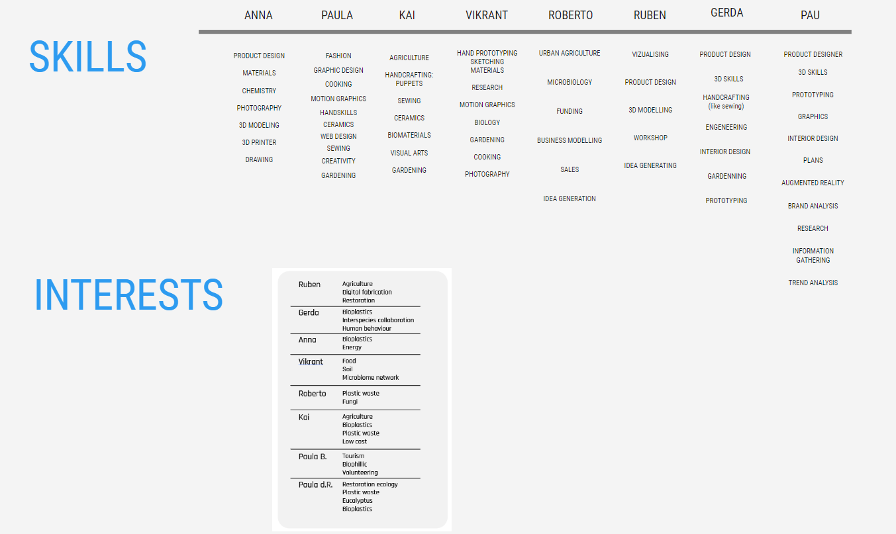
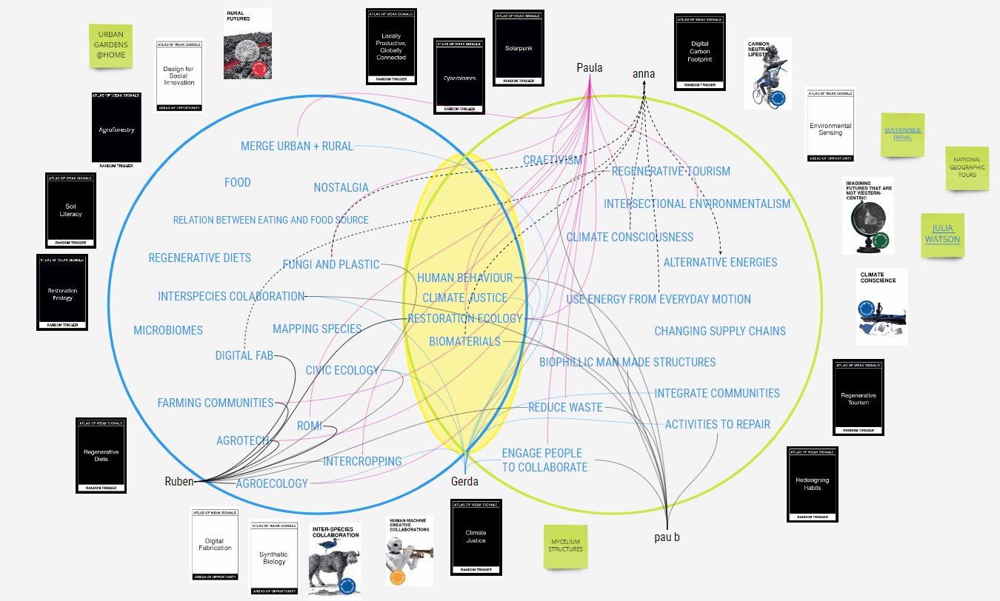
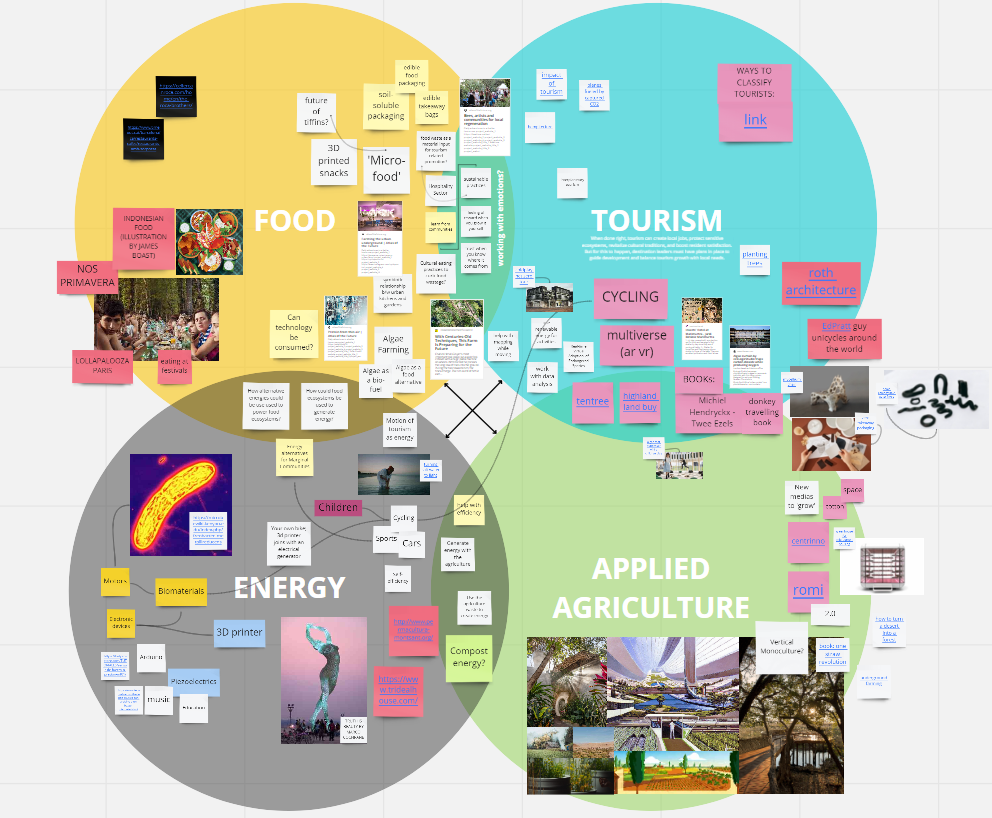
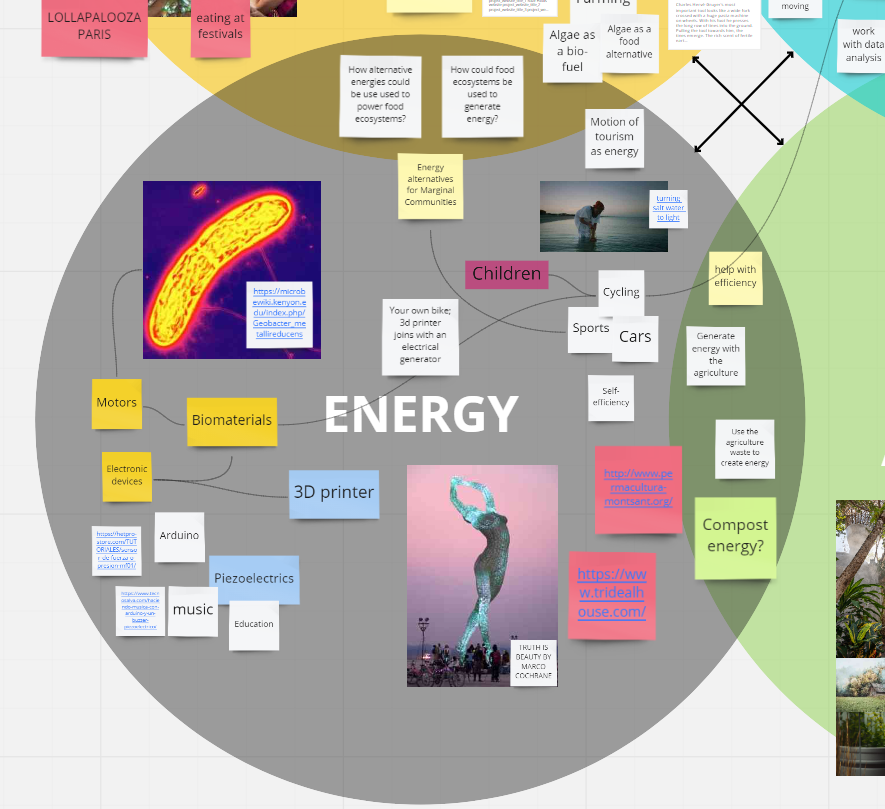

"Hybrid spaces for facilitating synergetic relationships between people, machines and non-human living organisms through the use of novel modes of inter-species communications and interactions." Ilja Panic
For me, it is fascinating to be able to observe how the ecosystem with the nature, non-human being and people cooperate in a same environment, creating each other different paths and ways to develop.
Multiscalar Diagram
With the observation of the environment correlating with my interest, I decided to mix the Alternative Energy with the biomaterials. Also, because I see a connection with the cyberbiomes too; creating hybrid spaces to develop both of them together.
The behaviour of the biodiversity shows different ways to think; how to make the things better for all?, why human being just thinks about themselves?, Why we need to destroy to survive?. Human being create the world for themselves and nobody more, and that cannot stand any more. There are a lot of questions about the relation between humans and nature, but what makes me concern is; How we can benefit the life of humans with the life of nature?
Personal Reflection
During the trip I could notice the difference of the noises depending on the air, distance and form of the mountain that arrive to the place. All of them of course provoked for the environment of nature and humans. Can you notice the different between both audios?
Both audios are in nature, but the second one is closer to the city. So, even in nature, noise pollution is still plausible and therefore harmful.
Take care of the nature.
Creating little environment with mutual respect between all the species.
Make workshops to understand the environment and be conscious of it.
Use sustainability and nature responsibly.
Collaborative Diagram _ Group5
As I see it, the life of comfort that we have been living and living in the capitalist system, helps us to destroy above all to improve the world as a community of nature, not just as a community of human beings. This system makes us forget about other lives, individualizing the state and services into a single focus; straight white cisgender rich man.
To contribute to other people always makes you open your mind, and see different points that for you alone it's impossible. For that, the collaboration is an important step in all the aspects political.
After reflecting on the project I want to undertake and how I want to relate it to the mobility that flows between people. Among other points, I would clarify my priority of creating or playing with energy in my own sustainable way. For these reasons I decide to try other collaborations, such as SolarPunk.
Collaborative Diagram _ SolarPunk
In order to be able to work together properly, we have tried to pool our skills and interests and to separate the group into two parts, so that we can work more easily.


In the end, Vikrant, Ruben, Paula and I formed a subgroup. These would be the design spaces of each of us and how they interact with each other.


In this case my initial topic is energy. Seeing the price of electricity nowadays, and the very conception we have of energy as something magical and transparent. I think it is a topic where new concepts of thought can be explored and introduced. Not only personally, but to be able to explain the concept of energy, beyond the basic formula of work or as electricity, but everything that surrounds and influences it.
That’s why I think it’s a subject to explore and try to find points where I can contribute my bit, even if it’s just changing people’s point of view about energy.
Something to do
I will love to contact with Instituto Permacultura Montsant because they work with houses with their own circular ecosystem. It will be interesting to understand and know more about their works.
I will love to develop an electrical generator from mechanical energy. There are different videos on Youtube that can help on that.
I always have been very observative and analytical, but I will add in both skills after this week the determination, at the end, if you don't have a focus to point those skills you will lose the attention and create noise instead of thoughts.